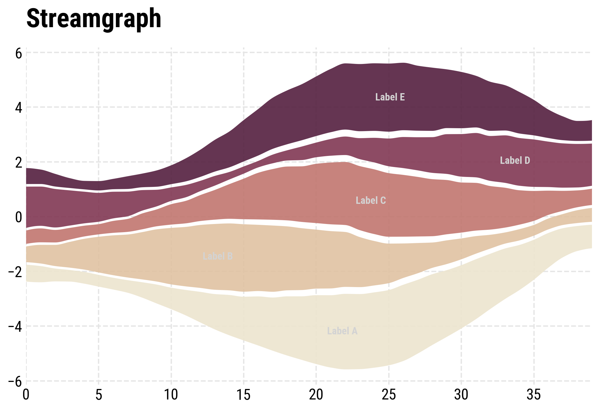

pystreamgraph¶
A little vibe-coded package to help with the plotting of streamgraphs in python. It was already possible in matplotlib, but quite messy. This package should make it a one-liner. Implements ordering of streams, margins between them, smoothing, and various options for transitions, as well as smart label-placement via simulated annealing .
Install¶
pip install pystreamgraph
Install from GitHub (if PyPI name is undecided)¶
pip install git+https://github.com/MNoichl/pystreamgraph.git
Quickstart¶
import numpy as np
import matplotlib.pyplot as plt
from pystreamgraph import plot_streamgraph
rng = np.random.default_rng(7)
n, k = 40, 5
X_ = np.arange(n)
base = np.linspace(0, 2*np.pi, n)
Y_ = []
for i in range(k):
phase = rng.uniform(0, 2*np.pi)
amp = rng.uniform(0.6, 1.3)
y = amp * (np.sin(base + phase) + 1.2) + rng.normal(0, 0.08, size=n) + 0.15
y = np.clip(y, 0, None)
Y_.append(y)
Y_ = np.vstack(Y_)
ax = plot_streamgraph(X_, Y_, labels=list("ABCDE"), sorted_streams=False,
margin_frac=0.10, smooth_window=3, cmap='magma',
curve_samples=40,alpha=0.9,label_color='grey',label_placement=True,label_position='max_width')
ax.set_title("Streamgraph")
plt.show()
